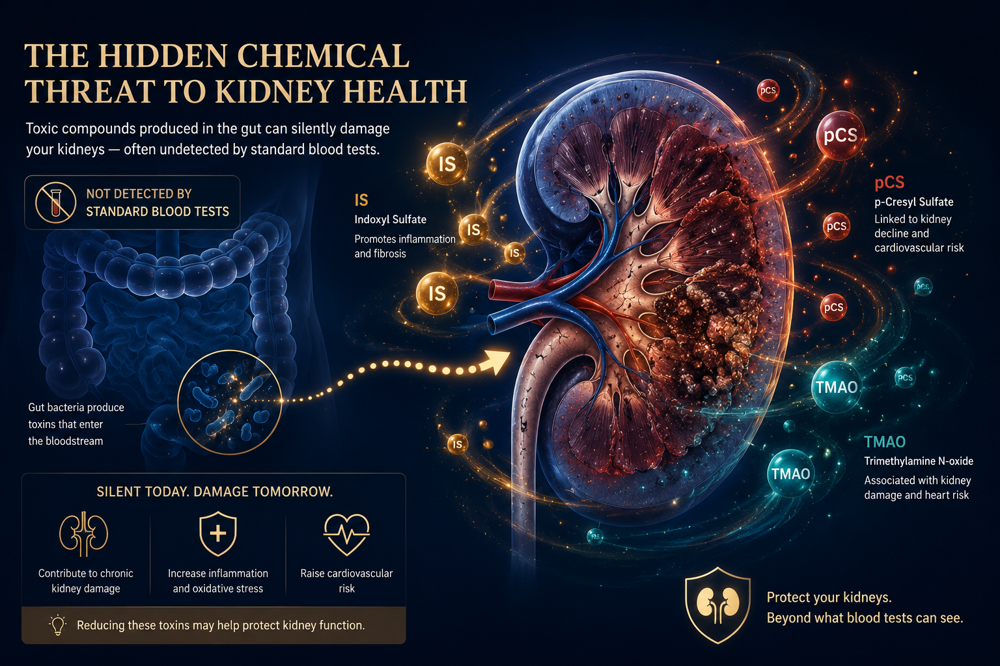
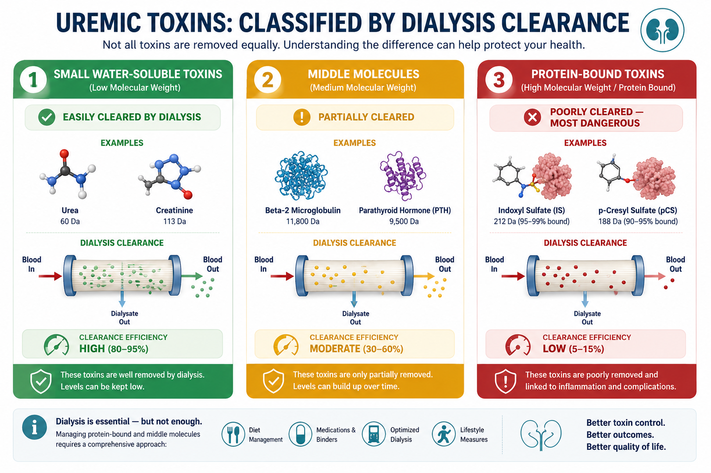
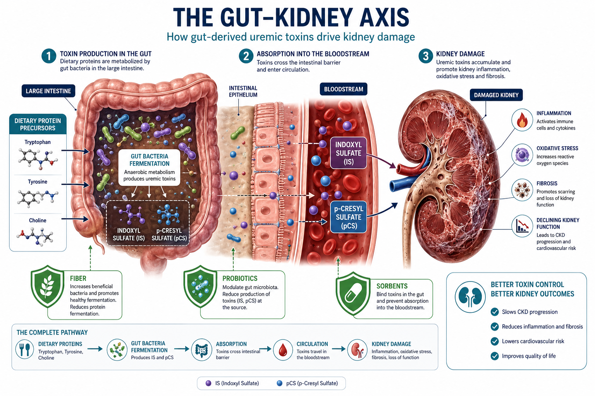
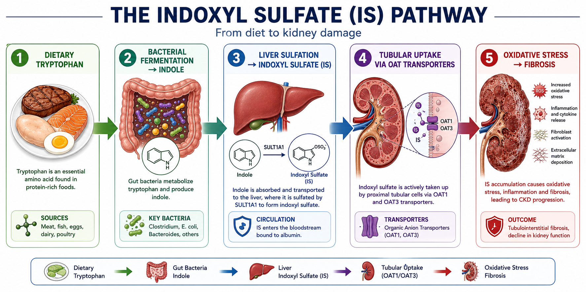
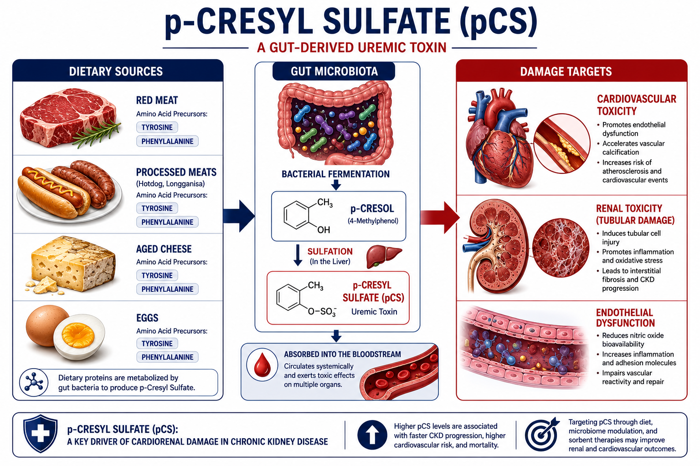
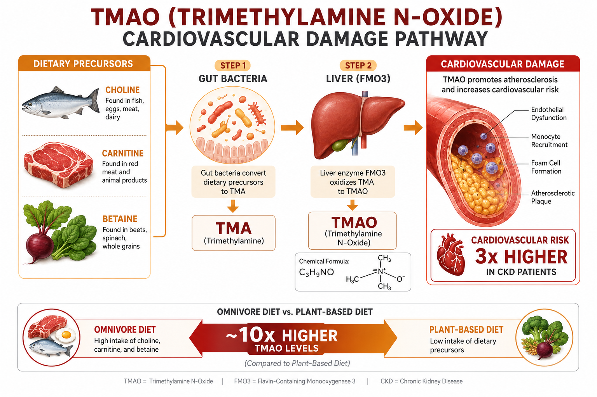
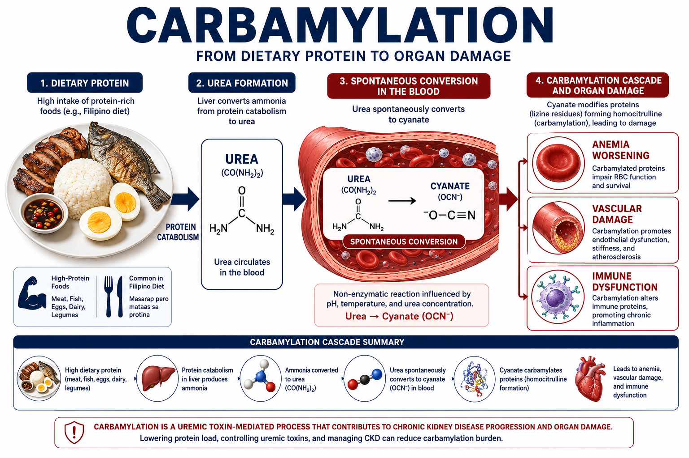
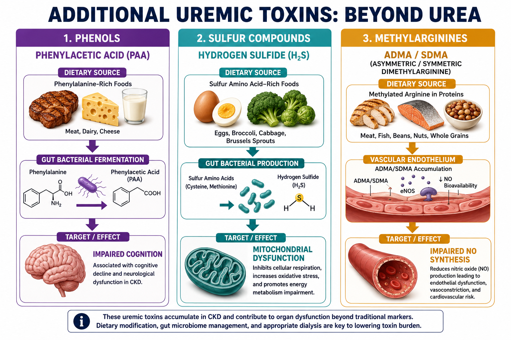
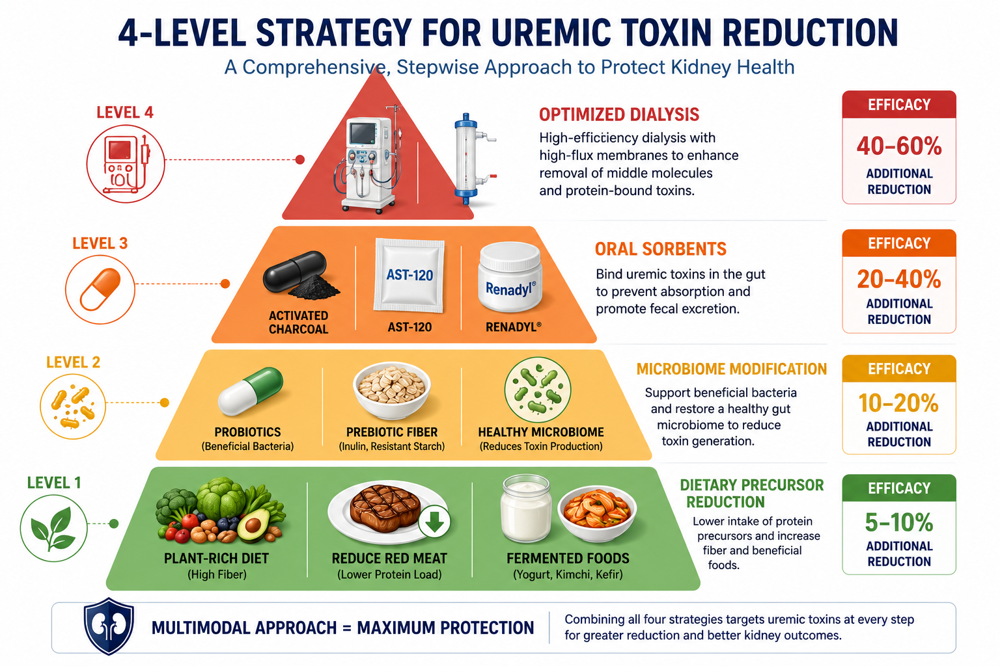

What Are Uremic Toxins — and Why Are They Invisible on Standard Blood Tests?Ano ang mga Uremic Toxin — at Bakit Hindi Sila Nakikita sa Mga Karaniwang Pagsusuri ng Dugo?Unsa ang mga Uremic Toxin — ug Ngano nga Dili Makita sa Mga Karaniwang Pagsusuri sa Dugo? Ano ing deng Uremic Toxin — at Bakit Ali Sila Nakikita king Deng Karaniwang Pagsusuri ning Daya?

Uremic toxins are metabolic waste products that accumulate in CKD and directly damage the kidneys, heart, vessels, and immune system. Most are not measured on routine blood panels — yet they are responsible for much of the inflammation, cardiovascular mortality, and CKD progression that occurs even in well-dialyzed patients. Their dietary precursors are specific, identifiable, and reducible.Ang mga uremic toxin ay mga metabolic waste na nag-iipon sa CKD at direktang nasisira ang mga bato, puso, mga daluyan ng dugo, at immune system. Karamihan ay hindi sinusukat sa mga karaniwang pagsusuri ng dugo — ngunit sila ang responsable sa malaking bahagi ng pamamaga, pagkamatay sa cardiovascular, at pag-unlad ng CKD na nangyayari kahit sa mga pasyenteng maayos ang dialysis. Ang kanilang mga dietary precursor ay tiyak, matutukoy, at mababawasan.Ang mga uremic toxin mao ang mga metabolic waste nga nag-ipon sa CKD ug direktang nakahalit sa mga kidney, puso, mga ugat, ug immune system. Kadaghanan dili gisukod sa mga karaniwang pagsusuri sa dugo — apan sila ang responsable sa dakong bahin sa pamamagang, pagkamatay sa cardiovascular, ug pag-abante sa CKD nga mahitabo bisan sa mga pasyente nga maayong nadialysis. Ang ilang mga dietary precursor espesipiko, matudloan, ug mapagpabawan. Ing deng uremic toxin ya deng metabolic waste a nag-iipon king CKD at direktang nasisira ing deng batu, pusu, deng daluyan ning daya, at immune system. Kadaklan ya ali sinusukat king deng karaniwang pagsusuri ning daya — ngarud sila ing responsable king malaking bahagi ning pamamaga, pagkamatay king cardiovascular, at pag-unlad ning CKD a nangyayari kahit king deng pasyenteng maayos ing dialysis. Ing kanilang deng dietary precursor ya tiyak, matutukoy, at mababawasan.

Why dialysis doesn't solve everythingBakit hindi lahat ay nasosolusyunan ng dialysisNgano nga dili tanan masulbad sa dialysis Bakit ali amin ya nasosolusyunan ning dialysis
Conventional hemodialysis efficiently clears small water-soluble toxins — urea, creatinine, potassium. But protein-bound toxins like indoxyl sulfate and p-cresyl sulfate remain 95%+ bound to albumin throughout the dialysis session — the filter cannot separate them. Dialysis patients with high indoxyl sulfate levels have 3× higher cardiovascular mortality despite adequate Kt/V.Ang karaniwang hemodialysis ay mahusay na naglilinis ng mga maliliit na water-soluble toxin — urea, creatinine, potassium. Ngunit ang mga protein-bound toxin tulad ng indoxyl sulfate at p-cresyl sulfate ay nananatiling 95%+ nakatali sa albumin sa buong sesyon ng dialysis — hindi maaaring ihiwalay ng filter ang mga ito. Ang mga pasyenteng nagdi-dialysis na may mataas na antas ng indoxyl sulfate ay may 3× na mas mataas na cardiovascular mortality kahit sapat ang Kt/V.Ang karaniwang hemodialysis episyente nga naglimpyo sa mga gagmay nga water-soluble toxin — urea, creatinine, potassium. Apan ang mga protein-bound toxin sama sa indoxyl sulfate ug p-cresyl sulfate nagpabilin nga 95%+ nakatali sa albumin sa tibuok sesyon sa dialysis — dili mapahimulag sa filter. Ang mga pasyente sa dialysis nga may taas nga indoxyl sulfate may 3× nga mas taas nga cardiovascular mortality bisan sapat ang Kt/V. Ing karaniwang hemodialysis ya mahusay a naglilinis ning deng maliliit a water-soluble toxin — urea, creatinine, potassium. Ngarud ing deng protein-bound toxin tulad ning indoxyl sulfate at p-cresyl sulfate ya nananatiling 95%+ nakatali king albumin king buong sesyon ning dialysis — ali maaaring ihiwalay ning filter ing deng ini. Ing deng pasyenteng nagdi-dialysis a atin matas a antas ning indoxyl sulfate ya atin 3× a mas matas a cardiovascular mortality kahit sapat ing Kt/V.
The gut is the factoryAng bituka ang pabrikaAng tinai mao ang pabrika Ing bituka ing pabrika
Most protein-bound uremic toxins are not direct food components — they are produced by gut bacteria that ferment unabsorbed dietary proteins and amino acids in the colon. The quantity produced depends entirely on: (1) how much protein reaches the colon undigested, and (2) which bacterial species dominate the microbiome. Both are modifiable by diet.Karamihan sa mga protein-bound uremic toxin ay hindi direktang bahagi ng pagkain — ginagawa sila ng mga bakterya sa bituka na nagfe-ferment ng mga hindi nasipsip na dietary protein at amino acid sa colon. Ang dami na ginagawa ay nakasalalay sa: (1) kung gaano karaming protina ang umaabot sa colon nang hindi natutunaw, at (2) kung aling species ng bakterya ang nangingibabaw sa microbiome. Pareho ay mababago ng diyeta.Kadaghanan sa mga protein-bound uremic toxin dili direktang bahin sa pagkaon — gihimo sila sa mga bakterya sa tinai nga nagferment sa mga hindi nasuyop nga dietary protein ug amino acid sa colon. Ang kantidad nga gihimo nagsalig sa: (1) pila ka protein ang moabot sa colon nga wala natunaw, ug (2) kung unsang species sa bakterya ang nagdominar sa microbiome. Pareho mabag-o sa diyeta. Kadaklan king deng protein-bound uremic toxin ya ali direktang bahagi ning pamangan — ginagawa sila ning deng bakterya king bituka a nagfe-ferment ning deng ali nasipsip a dietary protein at amino acid king colon. Ing dami a ginagawa ya nakasalalay king: (1) nung gaano karaming protina ing umaabot king colon nang ali natutunaw, at (2) nung aling species ning bakterya ing nangingibabaw king microbiome. Pareho ya mababago ning diyeta.
How the Gut Microbiome Produces Uremic ToxinsPaano Gumagawa ng mga Uremic Toxin ang Gut MicrobiomeGiunsa Paghimo sa Gut Microbiome og mga Uremic Toxin Paano Gumagawa ning deng Uremic Toxin ing Gut Microbiome

Indoxyl Sulfate (IS)Indoxyl Sulfate (IS)Indoxyl Sulfate (IS) Indoxyl Sulfate (IS)
Indoxyl SulfateIndoxyl SulfateIndoxyl Sulfate Indoxyl Sulfate
C₈H₇NO₄S · MW: 213 Da · Protein-bound: 95%Dietary PrecursorDietary PrecursorDietary Precursor Dietary Precursor
- Tryptophan — the essential amino acid in proteinTryptophan — ang mahahalagang amino acid sa protinaTryptophan — ang esensyal nga amino acid sa protina Tryptophan — ing mahahalagang amino acid king protina
- Gut bacteria (Clostridiales) convert tryptophan → indole → absorbed → liver sulfation → indoxyl sulfateMga bakterya sa bituka (Clostridiales) ang nag-co-convert ng tryptophan → indole → nasipsip → liver sulfation → indoxyl sulfateMga bakterya sa tinai (Clostridiales) ang nag-convert sa tryptophan → indole → nasuyop → liver sulfation → indoxyl sulfate Deng bakterya king bituka (Clostridiales) ing nag-co-convert ning tryptophan → indole → nasipsip → liver sulfation → indoxyl sulfate
- High-protein diets dramatically increase IS productionAng mga diyetang mataas sa protina ay dramatikong nagpapataas ng produksyon ng ISAng mga diyeta nga taas sa protina dramatiko nga nagpadako sa produksyon sa IS Ing deng diyetang matas king protina ya dramatikong nagpapataas ning produksyon ning IS
- Red meat, poultry, fish, eggs, dairy — all tryptophan-richPulang karne, manok, isda, itlog, gatas — lahat ay mayaman sa tryptophanPulang karne, manok, isda, itlog, gatas — tanan dato sa tryptophan Pulang karne, manok, isda, itlog, gatas — amin ya mayaman king tryptophan
Organ DamagePinsala sa OrganPinsala sa Organ Pinsala king Organ
- Direct tubular cell toxicity — oxidative stress, NF-κB activationDirektang toxicity sa tubular cell — oxidative stress, pag-activate ng NF-κBDirektang toxicity sa tubular cell — oxidative stress, pag-activate sa NF-κB Direktang toxicity king tubular cell — oxidative stress, pag-activate ning NF-κB
- Increases TGF-β → renal fibrosis and tubular atrophyNagpapataas ng TGF-β → renal fibrosis at tubular atrophyNagpadako sa TGF-β → renal fibrosis ug tubular atrophy Nagpapataas ning TGF-β → renal fibrosis at tubular atrophy
- Endothelial dysfunction → atherosclerosisEndothelial dysfunction → atherosclerosisEndothelial dysfunction → atherosclerosis Endothelial dysfunction → atherosclerosis
- Cardiac fibrosis — independent CV mortality predictorCardiac fibrosis — independyenteng predictor ng CV mortalityCardiac fibrosis — independyenteng predictor sa CV mortality Cardiac fibrosis — independyenteng predictor ning CV mortality
- Impairs vascular smooth muscle cell apoptosis → calcificationNagpapahina ng apoptosis ng vascular smooth muscle cell → calcificationNagpapug-os sa apoptosis sa vascular smooth muscle cell → calcification Nagpapahina ning apoptosis ning vascular smooth muscle cell → calcification
- Immune dysfunction — suppresses neutrophil functionImmune dysfunction — nagpapahina ng function ng neutrophilImmune dysfunction — nagpapug-os sa function sa neutrophil Immune dysfunction — nagpapahina ning function ning neutrophil
How to ReducePaano BawasanGiunsa Pagkunhod Paano Bawasan
- Protein restriction 0.6–0.8 g/kg/day (pre-dialysis)Paghihigpit ng protina 0.6–0.8 g/kg/araw (bago ang dialysis)Paghigpit sa protina 0.6–0.8 g/kg/adlaw (bago ang dialysis) Paghihigpit ning protina 0.6–0.8 g/kg/aldo (bago ing dialysis)
- Increase dietary fiber → feeds IS-reducing BifidobacteriumDagdagan ang dietary fiber → nagpapakain sa IS-reducing na BifidobacteriumDugangan ang dietary fiber → nagpakain sa IS-reducing nga Bifidobacterium Dagdagan ing dietary fiber → nagpapakain king IS-reducing a Bifidobacterium
- Renadyl (Lactobacillus/Bifidobacterium) — reduces IS 20–30%Renadyl (Lactobacillus/Bifidobacterium) — nagpapababa ng IS ng 20–30%Renadyl (Lactobacillus/Bifidobacterium) — nagkunhod sa IS og 20–30% Renadyl (Lactobacillus/Bifidobacterium) — nagpapababa ning IS ning 20–30%
- Psyllium husk 5 g daily — reduces colonic protein fermentationPsyllium husk 5 g araw-araw — nagpapababa ng fermentation ng protina sa colonPsyllium husk 5 g adlaw-adlaw — nagkunhod sa fermentation sa protina sa colon Psyllium husk 5 g aldo-aldo — nagpapababa ning fermentation ning protina king colon
- AST-120 (spherical activated carbon oral adsorbent) — binds indole in colon before absorption (available in Japan; research use)AST-120 (spherical activated carbon oral adsorbent) — nagbe-bind ng indole sa colon bago masipsip (available sa Japan; pananaliksik)AST-120 (spherical activated carbon oral adsorbent) — nagbind sa indole sa colon bago masuyop (available sa Japan; pananaliksik) AST-120 (spherical activated carbon oral adsorbent) — nagbe-bind ning indole king colon bago masipsip (available king Japan; pananaliksik)

p-Cresyl Sulfate (pCS)p-Cresyl Sulfate (pCS)p-Cresyl Sulfate (pCS) p-Cresyl Sulfate (pCS)
p-Cresyl Sulfatep-Cresyl Sulfatep-Cresyl Sulfate p-Cresyl Sulfate
C₇H₈O₄S · MW: 188 Da · Protein-bound: 90%Dietary PrecursorDietary PrecursorDietary Precursor Dietary Precursor
- Tyrosine and phenylalanine — aromatic amino acids in all dietary proteinsTyrosine at phenylalanine — aromatic amino acids sa lahat ng dietary proteinTyrosine ug phenylalanine — aromatic amino acids sa tanan nga dietary protein Tyrosine at phenylalanine — aromatic amino acids king amin ning dietary protein
- Gut bacteria convert tyrosine → p-cresol → liver sulfation → p-Cresyl SulfateAng mga bakterya sa bituka ay nag-co-convert ng tyrosine → p-cresol → liver sulfation → p-Cresyl SulfateAng mga bakterya sa tinai nag-convert sa tyrosine → p-cresol → liver sulfation → p-Cresyl Sulfate Ing deng bakterya king bituka ya nag-co-convert ning tyrosine → p-cresol → liver sulfation → p-Cresyl Sulfate
- Highest precursor load: red meat, organ meats, poultry skin, eggsPinakamataas na precursor load: pulang karne, organ meats, balat ng manok, itlogPinakataas nga precursor load: pulang karne, organ meats, panit sa manok, itlog Pinakamatas a precursor load: pulang karne, organ meats, balat ning manok, itlog
- High-fiber diets reduce p-cresol-producing bacteria selectivelyAng mga diyetang mataas sa fiber ay nagpapababa ng mga bakteryang gumagawa ng p-cresol nang selektiboAng mga diyeta nga taas sa fiber nagkunhod sa mga bakterya nga nagprodyus sa p-cresol nga selektibo Ing deng diyetang matas king fiber ya nagpapababa ning deng bakteryang gumagawa ning p-cresol nang selektibo
Organ DamagePinsala sa OrganPinsala sa Organ Pinsala king Organ
- Proximal tubule toxicity — inhibits organic anion transportersToxicity sa proximal tubule — nagpipigil ng mga organic anion transporterToxicity sa proximal tubule — nagpugong sa mga organic anion transporter Toxicity king proximal tubule — nagpipigil ning deng organic anion transporter
- Podocyte injury → worsens proteinuriaPinsala sa podocyte → nagpapalala ng proteinuriaPinsala sa podocyte → nagpalala sa proteinuria Pinsala king podocyte → nagpapalala ning proteinuria
- Impairs neutrophil oxidative burst → increased infection riskNagpapahina ng oxidative burst ng neutrophil → nadagdagang panganib ng impeksyonNagpapug-os sa oxidative burst sa neutrophil → nadugangan nga peligro sa impeksyon Nagpapahina ning oxidative burst ning neutrophil → nadagdagang panganib ning impeksyon
- Platelet dysfunction → thrombosis riskPlatelet dysfunction → panganib ng thrombosisPlatelet dysfunction → peligro sa thrombosis Platelet dysfunction → panganib ning thrombosis
- Endothelial toxicity → vascular calcificationEndothelial toxicity → vascular calcificationEndothelial toxicity → vascular calcification Endothelial toxicity → vascular calcification
- High pCS independently predicts mortality in HD patientsAng mataas na pCS ay independyenteng nagtataya ng mortality sa mga pasyenteng HDAng taas nga pCS independyente nga nagpredikto sa mortality sa mga pasyente sa HD Ing matas a pCS ya independyenteng nagtataya ning mortality king deng pasyenteng HD
How to ReducePaano BawasanGiunsa Pagkunhod Paano Bawasan
- Reduce animal protein — especially red meat and poultry skinBawasan ang animal protein — lalo na ang pulang karne at balat ng manokPagkunhori ang animal protein — ilabi na ang pulang karne ug panit sa manok Bawasan ing animal protein — lalo a ing pulang karne at balat ning manok
- High soluble fiber diet — shifts microbiome away from proteolytic speciesDiyetang mataas sa soluble fiber — inililipat ang microbiome palayo sa mga proteolytic speciesDiyeta nga taas sa soluble fiber — nagbalhin sa microbiome palayo sa mga proteolytic species Diyetang matas king soluble fiber — inililipat ing microbiome palayo king deng proteolytic species
- Arabinoxylan (soluble fiber from wheat bran) specifically reduces p-cresol-producing bacteria by 40–60%Arabinoxylan (soluble fiber mula sa wheat bran) ay partikular na nagpapababa ng mga bakteryang gumagawa ng p-cresol ng 40–60%Arabinoxylan (soluble fiber gikan sa wheat bran) espesipiko nga nagkunhod sa mga bakterya nga nagprodyus sa p-cresol og 40–60% Arabinoxylan (soluble fiber mula king wheat bran) ya partikular a nagpapababa ning deng bakteryang gumagawa ning p-cresol ning 40–60%
- Renadyl probiotics — reduces pCS precursor productionRenadyl probiotics — nagpapababa ng produksyon ng precursor ng pCSRenadyl probiotics — nagkunhod sa produksyon sa precursor sa pCS Renadyl probiotics — nagpapababa ning produksyon ning precursor ning pCS
- Psyllium husk, beta-glucan (oat), inulin (onion, garlic) — all effective prebiotic fiber sourcesPsyllium husk, beta-glucan (oat), inulin (sibuyas, bawang) — lahat ay epektibong prebiotic fiber sourcesPsyllium husk, beta-glucan (oat), inulin (sibuyas, bawang) — tanan epektibong prebiotic fiber sources Psyllium husk, beta-glucan (oat), inulin (sibuyas, bawang) — amin ya epektibong prebiotic fiber sources

Trimethylamine N-Oxide (TMAO)Trimethylamine N-Oxide (TMAO)Trimethylamine N-Oxide (TMAO) Trimethylamine N-Oxide (TMAO)
Trimethylamine N-Oxide (TMAO)Trimethylamine N-Oxide (TMAO)Trimethylamine N-Oxide (TMAO) Trimethylamine N-Oxide (TMAO)
C₃H₉NO · MW: 75 Da · Water-soluble but not cleared by HDDietary PrecursorDietary PrecursorDietary Precursor Dietary Precursor
- Choline — egg yolks, red meat, poultry, fishCholine — pula ng itlog, pulang karne, manok, isdaCholine — pula sa itlog, pulang karne, manok, isda Choline — pula ning itlog, pulang karne, manok, isda
- L-Carnitine — red meat (especially beef and lamb)L-Carnitine — pulang karne (lalo na ang baka at tupa)L-Carnitine — pulang karne (ilabi na ang baka ug karnero) L-Carnitine — pulang karne (lalo a ing baka at tupa)
- Betaine — beets, spinach, wheat germBetaine — beets, spinach, wheat germBetaine — beets, spinach, wheat germ Betaine — beets, spinach, wheat germ
- Gut bacteria convert these → TMA → liver FMO3 enzyme → TMAOAng mga bakterya sa bituka ay nag-co-convert ng mga ito → TMA → liver FMO3 enzyme → TMAOAng mga bakterya sa tinai nag-convert niini → TMA → liver FMO3 enzyme → TMAO Ing deng bakterya king bituka ya nag-co-convert ning deng ini → TMA → liver FMO3 enzyme → TMAO
- Omnivores produce 10× more TMAO than vegans from the same carnitine dose — due to different microbiomeAng mga kumakain ng lahat ay gumagawa ng 10× na mas maraming TMAO kaysa mga vegan mula sa parehong dosis ng carnitine — dahil sa ibang microbiomeAng mga omnivore nagprodyus og 10× nga mas daghang TMAO kaysa mga vegan gikan sa pareho nga dosis sa carnitine — tungod sa lain nga microbiome Ing deng mamangan ning amin ya gumagawa ning 10× a mas dacal a TMAO kaysa deng vegan mula king parehong dosis ning carnitine — dahil king ibang microbiome
Organ DamagePinsala sa OrganPinsala sa Organ Pinsala king Organ
- Promotes macrophage foam cell formation → atherosclerotic plaqueNagtataguyod ng pagbuo ng macrophage foam cell → atherosclerotic plaqueNagpalala sa pagbuhat sa macrophage foam cell → atherosclerotic plaque Nagtataguyod ning pagbuo ning macrophage foam cell → atherosclerotic plaque
- Accelerates platelet aggregation and thrombosisNagpapabilis ng platelet aggregation at thrombosisNagpadali sa platelet aggregation ug thrombosis Nagpapabilis ning platelet aggregation at thrombosis
- Inhibits reverse cholesterol transport → worsens dyslipidemiaNagpipigil ng reverse cholesterol transport → nagpapalala ng dyslipidemiaNagpugong sa reverse cholesterol transport → nagpalala sa dyslipidemia Nagpipigil ning reverse cholesterol transport → nagpapalala ning dyslipidemia
- Independent predictor of major cardiovascular events (3× risk)Independyenteng predictor ng mga pangunahing cardiovascular events (3× ang panganib)Independyenteng predictor sa mga pangunahing cardiovascular events (3× ang peligro) Independyenteng predictor ning deng pangunahing cardiovascular events (3× ing panganib)
- Promotes renal inflammation and fibrosis in CKD animal modelsNagtataguyod ng renal inflammation at fibrosis sa mga CKD animal modelsNagpalala sa renal inflammation ug fibrosis sa mga CKD animal models Nagtataguyod ning renal inflammation at fibrosis king deng CKD animal models
- High TMAO correlates with cardiovascular mortality in CKD cohortsAng mataas na TMAO ay may kaugnayan sa cardiovascular mortality sa mga CKD cohortAng taas nga TMAO may kalabutan sa cardiovascular mortality sa mga CKD cohort Ing matas a TMAO ya atin kaugnayan king cardiovascular mortality king deng CKD cohort
How to ReducePaano BawasanGiunsa Pagkunhod Paano Bawasan
- Reduce red meat — primary TMAO source in Filipino dietBawasan ang pulang karne — pangunahing pinagkukunan ng TMAO sa diyeta ng PilipinoPagkunhori ang pulang karne — pangunahing tinubdan sa TMAO sa diyeta sa Pilipino Bawasan ing pulang karne — pangunahing pinagkukunan ning TMAO king diyeta ning Pilipino
- Mediterranean diet pattern shifts microbiome → lower TMAOAng Mediterranean diet pattern ay nagbabago ng microbiome → mas mababang TMAOAng Mediterranean diet pattern nagbag-o sa microbiome → mas ubos nga TMAO Ing Mediterranean diet pattern ya nagbabago ning microbiome → mas mababang TMAO
- Resveratrol and 3,3-Dimethyl-1-butanol (DMB from balsamic vinegar, cold-pressed olive oil) inhibit TMA lyase enzymeResveratrol at 3,3-Dimethyl-1-butanol (DMB mula sa balsamic vinegar, cold-pressed olive oil) ay pumipigil sa TMA lyase enzymeResveratrol ug 3,3-Dimethyl-1-butanol (DMB gikan sa balsamic vinegar, cold-pressed olive oil) nagpugong sa TMA lyase enzyme Resveratrol at 3,3-Dimethyl-1-butanol (DMB mula king balsamic vinegar, cold-pressed olive oil) ya pumipigil king TMA lyase enzyme
- Garlic — allicin inhibits TMAO-producing bacteriaBawang — ang allicin ay pumipigil sa mga bakteryang gumagawa ng TMAOBawang — ang allicin nagpugong sa mga bakterya nga nagprodyus sa TMAO Bawang — ing allicin ya pumipigil king deng bakteryang gumagawa ning TMAO
- Plant-based protein substitution consistently reduces TMAO 30–50%Ang pagpapalit ng plant-based protein ay patuloy na nagpapababa ng TMAO ng 30–50%Ang pagbaylo sa plant-based protein kanunay nagkunhod sa TMAO og 30–50% Ing pagpapalit ning plant-based protein ya patuloy a nagpapababa ning TMAO ning 30–50%

Urea — Still Underappreciated as a ToxinUrea — Nananatiling Hindi Sapat ang Pagkilala Bilang LasonUrea — Nagpabilin nga Kulang ang Pagkilala Isip Hilo Urea — Nananatiling Ali Sapat ing Pagkilala Bilang Lason
UreaUreaUrea Urea
CH₄N₂O · MW: 60 Da · Water-soluble · Cleared by HDDietary PrecursorDietary PrecursorDietary Precursor Dietary Precursor
- All dietary protein — every gram of protein metabolized generates nitrogen, which becomes urea via the urea cycleLahat ng dietary protein — bawat gramo ng protinang na-metabolize ay gumagawa ng nitrogen, na nagiging urea sa pamamagitan ng urea cycleTanan nga dietary protein — ang matag gramo sa protina nga na-metabolize nagprodyus sa nitrogen, nga nahimong urea pinaagi sa urea cycle Amin ning dietary protein — bawat gramo ning protinang a-metabolize ya gumagawa ning nitrogen, a nagiging urea king pamamagitan ning urea cycle
- High-protein diets (≥1.2 g/kg/day in pre-dialysis) dramatically raise BUNAng mga diyetang mataas sa protina (≥1.2 g/kg/araw sa pre-dialysis) ay dramatikong nagpapataas ng BUNAng mga diyeta nga taas sa protina (≥1.2 g/kg/adlaw sa pre-dialysis) dramatiko nga nagpadako sa BUN Ing deng diyetang matas king protina (≥1.2 g/kg/aldo king pre-dialysis) ya dramatikong nagpapataas ning BUN
- Hidden protein sources: bagoong, processed meats, high-protein snacksMga nakatagong pinagkukunan ng protina: bagoong, processed meats, high-protein snacksMga nagtago nga tinubdan sa protina: bagoong, processed meats, high-protein snacks Deng nakatagong pinagkukunan ning protina: bagoong, processed meats, high-protein snacks
Organ DamagePinsala sa OrganPinsala sa Organ Pinsala king Organ
- Carbamylates proteins — reacts with albumin, lipoproteins, hemoglobin — causing structural dysfunctionNagca-carbamylate ng mga protina — nakikipag-react sa albumin, lipoproteins, hemoglobin — nagdudulot ng structural dysfunctionNagcarbamylate sa mga protina — nakig-react sa albumin, lipoproteins, hemoglobin — nagdala sa structural dysfunction Nagca-carbamylate ning deng protina — nakikipag-react king albumin, lipoproteins, hemoglobin — nagdudulot ning structural dysfunction
- Carbamylated LDL is more atherogenic than native LDLAng carbamylated LDL ay mas atherogenic kaysa native LDLAng carbamylated LDL mas atherogenic kaysa native LDL Ing carbamylated LDL ya mas atherogenic kaysa native LDL
- Carbamylated albumin impairs drug binding — alters drug metabolismAng carbamylated albumin ay nagpapahina ng drug binding — nagbabago ng drug metabolismAng carbamylated albumin nagpapug-os sa drug binding — nagbag-o sa drug metabolism Ing carbamylated albumin ya nagpapahina ning drug binding — nagbabago ning drug metabolism
- Gut epithelial toxicity → "leaky gut" → systemic inflammationGut epithelial toxicity → "leaky gut" → sistematikong pamamagaGut epithelial toxicity → "leaky gut" → sistematikong pamamagang Gut epithelial toxicity → "leaky gut" → sistematikong pamamaga
- High urea drives secondary generation of cyanate → further carbamylation cascadeAng mataas na urea ay nagdadala ng pangalawang henerasyon ng cyanate → karagdagang carbamylation cascadeAng taas nga urea nagdala sa ikaduhang henerasyon sa cyanate → dugang carbamylation cascade Ing matas a urea ya nagdadala ning pangalawang henerasyon ning cyanate → karagdagang carbamylation cascade
How to ReducePaano BawasanGiunsa Pagkunhod Paano Bawasan
- Protein restriction 0.6–0.8 g/kg/day in pre-dialysis CKDPaghihigpit ng protina 0.6–0.8 g/kg/araw sa pre-dialysis CKDPaghigpit sa protina 0.6–0.8 g/kg/adlaw sa pre-dialysis CKD Paghihigpit ning protina 0.6–0.8 g/kg/aldo king pre-dialysis CKD
- VLPD + ketoanalogues (Ketosteril) — recycles nitrogen, cuts BUN without malnutritionVLPD + ketoanalogues (Ketosteril) — nagre-recycle ng nitrogen, nagpapababa ng BUN nang walang malnutrisyonVLPD + ketoanalogues (Ketosteril) — nagrecycle sa nitrogen, nagkunhod sa BUN nga walay malnutrisyon VLPD + ketoanalogues (Ketosteril) — nagre-recycle ning nitrogen, nagpapababa ning BUN nang alang malnutrisyon
- High biological value protein (egg whites, fish) — less urea per gram of protein vs plant proteinHigh biological value protein (puti ng itlog, isda) — mas kaunting urea bawat gramo ng protina kumpara sa plant proteinHigh biological value protein (puti sa itlog, isda) — mas gamay nga urea matag gramo sa protina kumpara sa plant protein High biological value protein (puti ning itlog, isda) — mas kaunting urea bawat gramo ning protina kumpara king plant protein
- Adequate dialysis Kt/V ≥1.4 clears urea efficientlySapat na dialysis Kt/V ≥1.4 ay mahusay na nililinis ang ureaSapat nga dialysis Kt/V ≥1.4 episyente nga naglimpyo sa urea Sapat a dialysis Kt/V ≥1.4 ya mahusay a nililinis ing urea

Phenols, Indoles, and Sulfur CompoundsMga Phenol, Indole, at Sulfur CompoundMga Phenol, Indole, ug Sulfur Compound Deng Phenol, Indole, at Sulfur Compound
Phenylacetic AcidPhenylacetic AcidPhenylacetic Acid Phenylacetic Acid
Derived from phenylalanine fermentation by gut bacteria. Inhibits organic anion secretion in the proximal tubule, competes with drug secretion (drug interactions), and contributes to the uremic neurological syndrome. Reduced by protein restriction and fiber supplementation.Nagmumula sa fermentation ng phenylalanine ng mga bakterya sa bituka. Pumipigil ng organic anion secretion sa proximal tubule, nakikipagkumpitensya sa drug secretion (drug interactions), at nag-aambag sa uremic neurological syndrome. Nababawasan ng paghihigpit ng protina at fiber supplementation.Nagagikan sa fermentation sa phenylalanine sa mga bakterya sa tinai. Nagpugong sa organic anion secretion sa proximal tubule, nakigkumpetensya sa drug secretion (drug interactions), ug nag-ambit sa uremic neurological syndrome. Nagkunhod sa paghigpit sa protina ug fiber supplementation. Nagmumula king fermentation ning phenylalanine ning deng bakterya king bituka. Pumipigil ning organic anion secretion king proximal tubule, nakikipagkumpitensya king drug secretion (drug interactions), at nag-aambag king uremic neurological syndrome. Nababawasan ning paghihigpit ning protina at fiber supplementation.
Hydrogen Sulfide (H₂S)Hydrogen Sulfide (H₂S)Hydrogen Sulfide (H₂S) Hydrogen Sulfide (H₂S)
Produced from cysteine and methionine (sulfur-containing amino acids) by gut bacteria. At low levels it is a gasotransmitter; at high levels in CKD it causes cytotoxicity, mitochondrial inhibition, and vascular dysfunction. Sources: eggs, cruciferous vegetables (broccoli, cabbage), garlic (paradoxically — garlic's H₂S is vascular-protective at low doses).Ginagawa mula sa cysteine at methionine (sulfur-containing amino acids) ng mga bakterya sa bituka. Sa mababang antas ito ay gasotransmitter; sa mataas na antas sa CKD nagdudulot ito ng cytotoxicity, mitochondrial inhibition, at vascular dysfunction. Mga pinagkukunan: itlog, cruciferous vegetables (broccoli, repolyo), bawang (paradoxically — ang H₂S ng bawang ay nagpoprotekta sa daluyan sa mababang dosis).Gihimo gikan sa cysteine ug methionine (sulfur-containing amino acids) sa mga bakterya sa tinai. Sa ubos nga antas gasotransmitter kini; sa taas nga antas sa CKD nagdala kini sa cytotoxicity, mitochondrial inhibition, ug vascular dysfunction. Mga tinubdan: itlog, cruciferous vegetables (broccoli, repolyo), bawang (paradoxically — ang H₂S sa bawang nagprotekta sa ugat sa ubos nga dosis). Ginagawa mula king cysteine at methionine (sulfur-containing amino acids) ning deng bakterya king bituka. King mababang antas ini ya gasotransmitter; king matas a antas king CKD nagdudulot ini ning cytotoxicity, mitochondrial inhibition, at vascular dysfunction. Deng pinagkukunan: itlog, cruciferous vegetables (broccoli, repolyo), bawang (paradoxically — ing H₂S ning bawang ya nagpoprotekta king daluyan king mababang dosis).
Symmetric / Asymmetric Dimethylarginine (SDMA / ADMA)Symmetric / Asymmetric Dimethylarginine (SDMA / ADMA)Symmetric / Asymmetric Dimethylarginine (SDMA / ADMA) Symmetric / Asymmetric Dimethylarginine (SDMA / ADMA)
Derived from methylated arginine residues in dietary protein. ADMA inhibits nitric oxide synthase — reducing NO production, causing endothelial dysfunction, hypertension, and vascular stiffness. SDMA is a competitive inhibitor of cellular arginine transport. Both are independent predictors of cardiovascular events and CKD progression.Nagmumula sa methylated arginine residues sa dietary protein. Ang ADMA ay pumipigil sa nitric oxide synthase — nagpapababa ng produksyon ng NO, nagdudulot ng endothelial dysfunction, hypertension, at vascular stiffness. Ang SDMA ay competitive inhibitor ng cellular arginine transport. Parehong independyenteng predictor ng cardiovascular events at pag-unlad ng CKD.Nagagikan sa methylated arginine residues sa dietary protein. Ang ADMA nagpugong sa nitric oxide synthase — nagkunhod sa produksyon sa NO, nagdala sa endothelial dysfunction, hypertension, ug vascular stiffness. Ang SDMA competitive inhibitor sa cellular arginine transport. Pareho independyenteng predictor sa cardiovascular events ug pag-abante sa CKD. Nagmumula king methylated arginine residues king dietary protein. Ing ADMA ya pumipigil king nitric oxide synthase — nagpapababa ning produksyon ning NO, nagdudulot ning endothelial dysfunction, hypertension, at vascular stiffness. Ing SDMA ya competitive inhibitor ning cellular arginine transport. Parehong independyenteng predictor ning cardiovascular events at pag-unlad ning CKD.

Reducing Uremic Toxin Precursors — The Practical ProtocolPagbabawas ng mga Uremic Toxin Precursor — Ang Praktikal na ProtokolPagkunhod sa mga Uremic Toxin Precursor — Ang Praktikal nga Protokol Pagbabawas ning deng Uremic Toxin Precursor — Ing Praktikal a Protokol

| ToxinToxinToxin Toxin | Primary dietary precursorPangunahing dietary precursorPangunahing dietary precursor Pangunahing dietary precursor | Reduce via foodBawasan sa pamamagitan ng pagkainPagkunhori pinaagi sa pagkaon Bawasan king pamamagitan ning pamangan | Probiotic / prebiotic strategyEstratehiya sa probiotic / prebioticEstratehiya sa probiotic / prebiotic Estratehiya king probiotic / prebiotic |
|---|---|---|---|
| Indoxyl SulfateIndoxyl SulfateIndoxyl Sulfate Indoxyl Sulfate | Tryptophan (all proteins)Tryptophan (lahat ng protina)Tryptophan (tanan nga protina) Tryptophan (amin ning protina) | Protein restriction; avoid high-protein snacksPaghihigpit ng protina; iwasan ang high-protein snacksPaghigpit sa protina; likayi ang high-protein snacks Paghihigpit ning protina; iwasan ing high-protein snacks | Lactobacillus/Bifidobacterium (Renadyl); psyllium; inulinLactobacillus/Bifidobacterium (Renadyl); psyllium; inulinLactobacillus/Bifidobacterium (Renadyl); psyllium; inulin Lactobacillus/Bifidobacterium (Renadyl); psyllium; inulin |
| p-Cresyl Sulfatep-Cresyl Sulfatep-Cresyl Sulfate p-Cresyl Sulfate | Tyrosine, phenylalanine (meat, eggs)Tyrosine, phenylalanine (karne, itlog)Tyrosine, phenylalanine (karne, itlog) Tyrosine, phenylalanine (karne, itlog) | Reduce red meat, poultry skin; increase vegetable protein ratioBawasan ang pulang karne, balat ng manok; dagdagan ang ratio ng plant proteinPagkunhori ang pulang karne, panit sa manok; dugangan ang ratio sa plant protein Bawasan ing pulang karne, balat ning manok; dagdagan ing ratio ning plant protein | Arabinoxylan (wheat bran); prebiotic fiber; RenadylArabinoxylan (wheat bran); prebiotic fiber; RenadylArabinoxylan (wheat bran); prebiotic fiber; Renadyl Arabinoxylan (wheat bran); prebiotic fiber; Renadyl |
| TMAOTMAOTMAO TMAO | Choline (eggs), L-carnitine (red meat)Choline (itlog), L-carnitine (pulang karne)Choline (itlog), L-carnitine (pulang karne) Choline (itlog), L-carnitine (pulang karne) | Reduce beef, eggs yolk, organ meats; Mediterranean diet patternBawasan ang baka, pula ng itlog, organ meats; Mediterranean diet patternPagkunhori ang baka, pula sa itlog, organ meats; Mediterranean diet pattern Bawasan ing baka, pula ning itlog, organ meats; Mediterranean diet pattern | Garlic (allicin); balsamic vinegar (DMB); plant-based diet shifts microbiomeBawang (allicin); balsamic vinegar (DMB); plant-based diet nagbabago ng microbiomeBawang (allicin); balsamic vinegar (DMB); plant-based diet nagbag-o sa microbiome Bawang (allicin); balsamic vinegar (DMB); plant-based diet nagbabago ning microbiome |
| Urea / carbamylated proteinsUrea / carbamylated proteinsUrea / carbamylated proteins Urea / carbamylated proteins | All dietary protein (nitrogen)Lahat ng dietary protein (nitrogen)Tanan nga dietary protein (nitrogen) Amin ning dietary protein (nitrogen) | Protein restriction 0.6–0.8 g/kg; VLPD + ketoanaloguesPaghihigpit ng protina 0.6–0.8 g/kg; VLPD + ketoanaloguesPaghigpit sa protina 0.6–0.8 g/kg; VLPD + ketoanalogues Paghihigpit ning protina 0.6–0.8 g/kg; VLPD + ketoanalogues | Renadyl reduces colonic urease-producing bacteriaAng Renadyl ay nagpapababa ng mga urease-producing bacteria sa colonAng Renadyl nagkunhod sa mga urease-producing bacteria sa colon Ing Renadyl ya nagpapababa ning deng urease-producing bacteria king colon |
| ADMA / SDMAADMA / SDMAADMA / SDMA ADMA / SDMA | Methylated arginine in animal proteinMethylated arginine sa animal proteinMethylated arginine sa animal protein Methylated arginine king animal protein | Reduce processed meat; increase antioxidant-rich vegetables (reduce methylation stress)Bawasan ang processed meat; dagdagan ang mga gulay na mayaman sa antioxidant (bawasan ang methylation stress)Pagkunhori ang processed meat; dugangan ang mga utanon nga dato sa antioxidant (pagkunhori ang methylation stress) Bawasan ing processed meat; dagdagan ing deng gulay a mayaman king antioxidant (bawasan ing methylation stress) | L-arginine supplementation competes with ADMA (caution in CKD)Ang L-arginine supplementation ay nakikipagkumpitensya sa ADMA (mag-ingat sa CKD)Ang L-arginine supplementation nakigkumpetensya sa ADMA (mag-amping sa CKD) Ing L-arginine supplementation ya nakikipagkumpitensya king ADMA (mag-ingat king CKD) |
| Phenylacetic acidPhenylacetic acidPhenylacetic acid Phenylacetic acid | Phenylalanine (animal protein)Phenylalanine (animal protein)Phenylalanine (animal protein) Phenylalanine (animal protein) | Protein restriction; prefer plant protein sourcesPaghihigpit ng protina; mas piliin ang mga plant protein sourcesPaghigpit sa protina; mas piliion ang mga plant protein sources Paghihigpit ning protina; mas piliin ing deng plant protein sources | High fermentable fiber shifts fermentation away from amino acidsAng mataas na fermentable fiber ay naglilit ng fermentation palayo sa mga amino acidAng taas nga fermentable fiber nagbalhin sa fermentation palayo sa mga amino acid Ing matas a fermentable fiber ya naglilit ning fermentation palayo king deng amino acid |
The single most impactful gut intervention available in the Philippines todayAng pinaka-epektibong gut intervention na available sa Pilipinas ngayonAng pinaka-epektibong gut intervention nga available sa Pilipinas karon Ing pinaka-epektibong gut intervention a available king Pilipinas ngayon
Renadyl (Goodfellow Pharma — 45 billion units of Lactobacillus acidophilus, Bifidobacterium longum, and Streptococcus thermophilus per capsule) is the most evidence-backed probiotic supplement for uremic toxin reduction in CKD. Clinical trials show 20–30% reduction in indoxyl sulfate and p-cresyl sulfate levels over 6 weeks. Combined with psyllium husk 5 g daily and protein restriction — this triad is the most practical, locally available gut-directed CKD strategy for Filipino patients.Ang Renadyl (Goodfellow Pharma — 45 bilyong units ng Lactobacillus acidophilus, Bifidobacterium longum, at Streptococcus thermophilus bawat kapsula) ang pinaka-pinagtitiwalaan ng ebidensyang probiotic supplement para sa pagbabawas ng uremic toxin sa CKD. Ang mga clinical trial ay nagpapakita ng 20–30% na pagbaba ng mga antas ng indoxyl sulfate at p-cresyl sulfate sa loob ng 6 na linggo. Kasama ang psyllium husk 5 g araw-araw at paghihigpit ng protina — ang triad na ito ang pinaka-praktikal at lokal na magagamit na gut-directed na estratehiya sa CKD para sa mga pasyenteng Pilipino.Ang Renadyl (Goodfellow Pharma — 45 bilyong units sa Lactobacillus acidophilus, Bifidobacterium longum, ug Streptococcus thermophilus matag kapsula) mao ang pinaka-gisuportahan sa ebidensya nga probiotic supplement sa pagkunhod sa uremic toxin sa CKD. Ang mga clinical trial nagpakita og 20–30% nga pagkunhod sa mga antas sa indoxyl sulfate ug p-cresyl sulfate sulod sa 6 ka semana. Inubanan sa psyllium husk 5 g adlaw-adlaw ug paghigpit sa protina — kining triad mao ang pinaka-praktikal ug lokal nga available nga gut-directed nga estratehiya sa CKD para sa mga pasyente sa Pilipinas. Ing Renadyl (Goodfellow Pharma — 45 bilyong units ning Lactobacillus acidophilus, Bifidobacterium longum, at Streptococcus thermophilus bawat kapsula) ing pinaka-pinagtitiwalaan ning ebidensyang probiotic supplement para king pagbabawas ning uremic toxin king CKD. Ing deng clinical trial ya nagpapakita ning 20–30% a pagbaba ning deng antas ning indoxyl sulfate at p-cresyl sulfate king loob ning 6 a lutu. Kasama ing psyllium husk 5 g aldo-aldo at paghihigpit ning protina — ing triad a ini ing pinaka-praktikal at lokal a magagamit a gut-directed a estratehiya king CKD para king deng pasyenteng Pilipino.